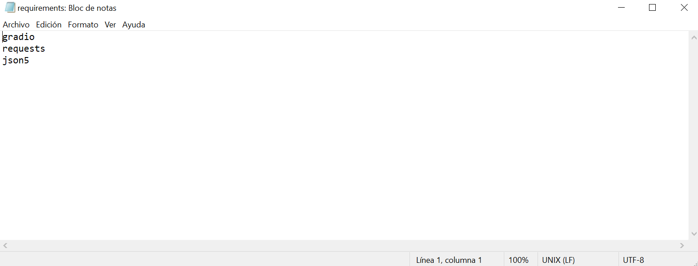
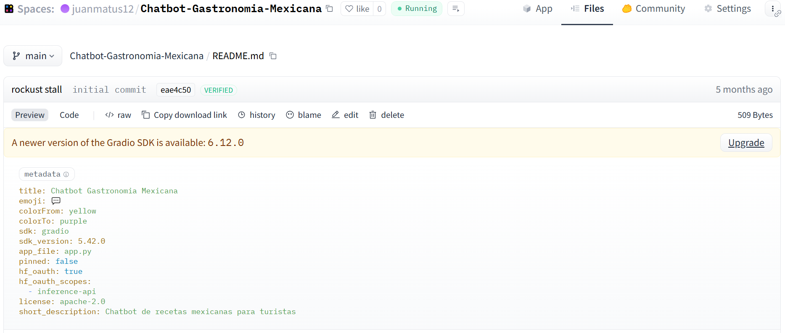
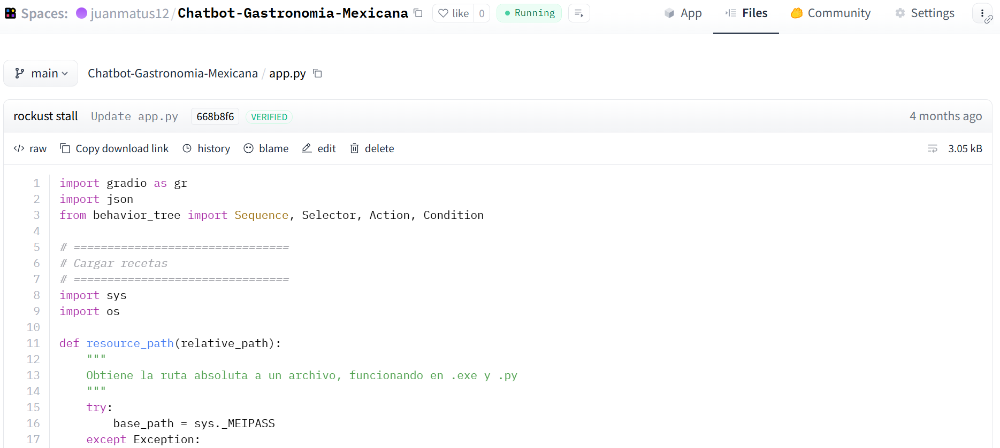
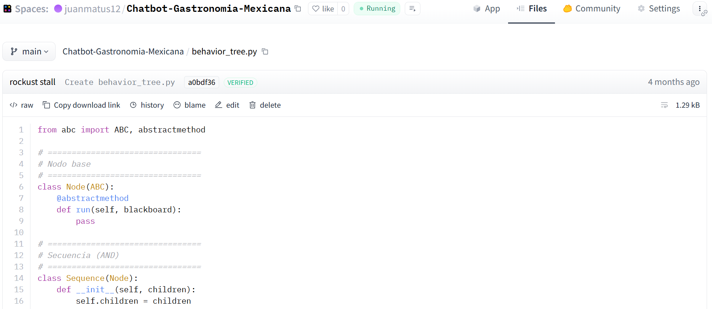
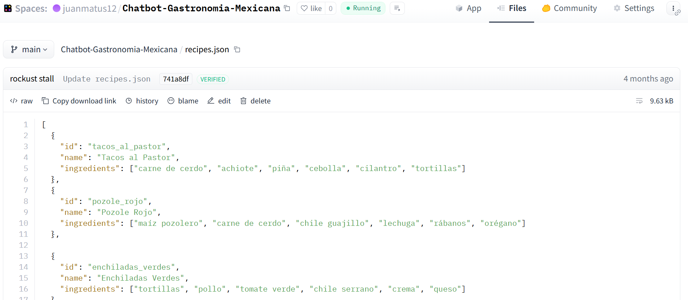
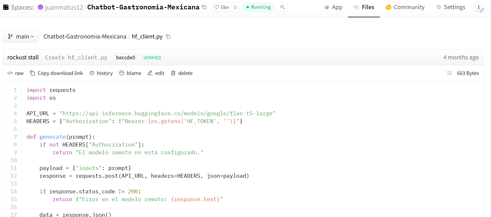
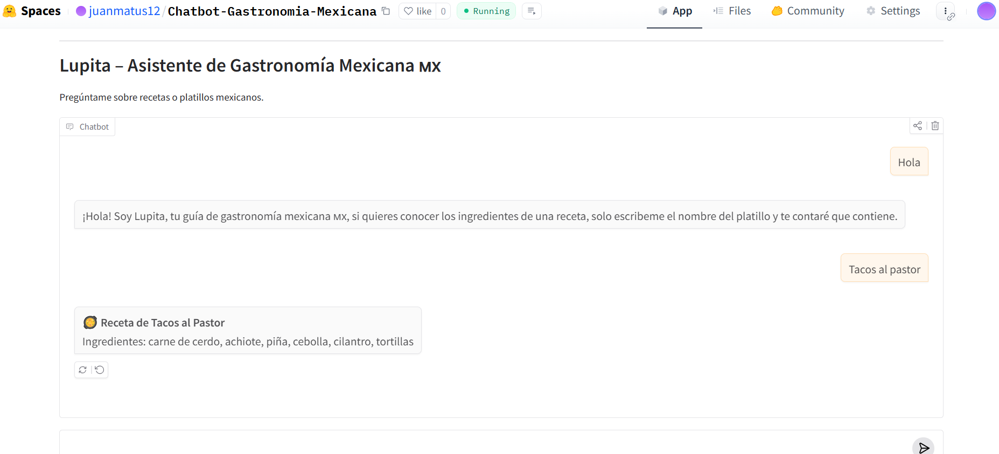

El objetivo de crear a Lupita fue para publicar una IA que ofrezca información sobre los ingredientes de los platillos mexicanos, con el objetivo de orientar a turistas y extranjeros interesados en la gastronomía del país.
Para desarrollar a Lupita utilicé la plataforma de Hugging Face Spaces y comencé creando un archivo de texto con los requerimientos básicos (requirements.txt) para crear a Lupita.

Tras subir el archivo requirements.txt a Hugging Face Spaces con la configuración necesaria para abrir el espacio, recibí el archivo README.md que contiene la biblioteca de Python "Gradio" para la interfaz interactiva con Lupita, y con el archivo básico de la aplicación app.py, siendo este último el más importante para Lupita.

El archivo app.py es el componente central del proyecto: contiene toda la lógica del chatbot, define cómo procesa los mensajes del usuario y construye la interfaz interactiva con Gradio. En otras palabras, es el archivo que hace que el chatbot de Lupita funcione.

Habiendo terminado el archivo que representa el corazón de Lupita “app.py”, me puse ahora a crear el archivo behavior_tre.py.
El archivo behavior_tree.py contiene la implementación del árbol de comportamiento (Behavior Tree) de Lupita, ya que es la estructura más comúnmente usada en desarrollo de inteligencia artificial, especialmente en videojuegos y chatbots, con la finalidad de organizar la toma de decisiones de manera modular, clara y extensible.

Habiendo hecho lo anterior, ahora solo hace falta la base de datos de las recetas, recipes.json.
Este archivo funciona como el “corazón gastronómico” del proyecto, ya que almacena de forma organizada cada receta con su identificador, su nombre y la lista de ingredientes que la componen. Con ello, Lupita puede reconocer los platillos y responder preguntas relacionadas con sus ingredientes.

Y finalmente cree el último archivo de python para mi IA, hf_client.py.
El archivo hf_client.py funciona como un cliente especializado para comunicarse con un modelo alojado en Hugging Face Inference API. Su propósito es gestionar las solicitudes al modelo remoto, enviar los mensajes del usuario y recibir las respuestas generadas por Lupita.

Por último, compilé todo los archivos dentro de Hugging Face Spaces y probé la interactividad con Lupita, resultando en un éxito.
